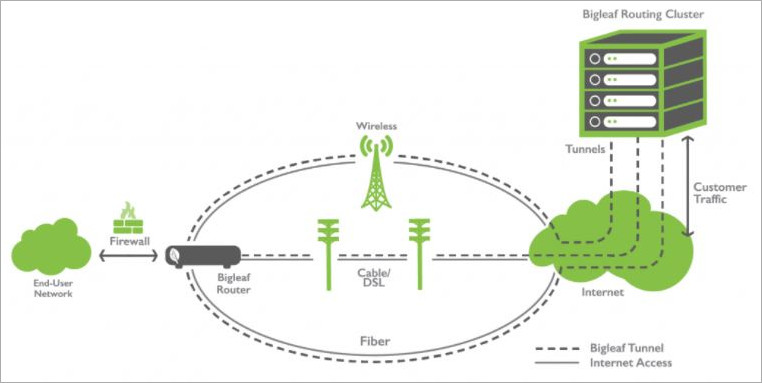
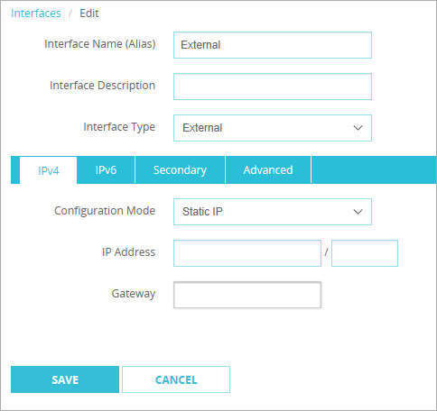

Deployment Overview
Bigleaf Cloud-first SD-WAN (Software Defined WAN) works to make sure that your business-critical applications are prioritized across your Internet connections, and that all traffic flows are routed over the best connection in real-time. They provide a plug-and-play router that lets you connect from your office through their gateway clusters in the Cloud, providing end-to-end visibility and control. The Bigleaf solution provides same-IP failover, intelligent load balancing, and dynamic QoS to the WatchGuard Firebox.
Integration Summary
These devices and services were used to test this integration:
- Bigleaf BLR-107 CPE Router
- Pre-configured by Bigleaf support.
- WatchGuard Firebox:
- Fireware v12.1.1
- Multiple Internet Connections
Test Topology
This integration guide is based on the concept of multiple ISP connections to the Bigleaf router tunneling all packets from and to the WatchGuard Firebox through a Software Defined Network (SDN) between Bigleaf gateway clusters and the on-site Bigleaf CPE Router.
Bigleaf Tunneling
The Bigleaf CPE Router creates an SD-WAN that intelligently aggregates network traffic across all of the connections to provide the highest possible throughput. The network traffic is tunneled through the Bigleaf Routing cluster.

Before You Begin With Bigleaf
After you purchase a Bigleaf router, the Bigleaf support team will request information they will use to pre-configure it before it is sent to you. They will collect this type of information (review the Bigleaf install guide for more information):
- Requested Installation/Activation Date.
- List of users who should have access to the Bigleaf Webapp.
- Full Name
- Email Address
- Time Zone
- Circuit information for each ISP connection.
- Provider Name
- Circuit Type (select one): Fiber / Cable / DS/ Copper / Cellular / Wireless / Satellite / T1-T3
- Circuit Use: (select one): Load balancing / Fallback Only (recommended only for circuits with bandwidth caps)
- Rated Download/Upload Speed
- Addressing Protocol (select one): DHCP / Static /PPPoE:
- For static IP provide the IP addresses, subnet, and gateway IP.
- For PPPoE provide the username and password.
Bigleaf will send with the router with a card containing the public IP information that you must configure on the Firebox. All inbound traffic will be sent to this IP address after the Bigleaf router in installed on your network. You can also find the assigned public IP address and your ISP connection information in the Bigleaf Web App:
- Log in to your Bigleaf account at https://app.bigleaf.net/login.
- Click Sites to browse to the appropriate site.
- Select the Configuration tab.
- The Configuration tab provides information on the submitted Circuit WANs, Site Info, Service Plan, Site Address, Shipping Address, LAN Networks, CPE Routers, and Port Settings.
The LAN Networks information is used for the WatchGuard Firebox IP address.
Configure the WatchGuard Firebox for Bigleaf
You must configure the Firebox to use the public IP address provided by Bigleaf.
- Log in to Fireware Web UI.
- Select Network > Interfaces.
- Select the interface you want to make external and select Edit.

- In the Interface Descriptiontext box, type a description.
- From the Interface Type drop-down list, select External.
- From the Configuration Mode drop-down list, select Static IP.
- In the IP Address text box, type the IP Address in CIDR notation format.
- In the Gateway text box, type the IP address.
- Click Save.
Configure the Bigleaf CPE Router
The Bigleaf CPE Router is pre-configured with your ISP information. You may need to flush the ARP cache of some devices in your network to register the new router.
- Connect the LAN port to the external port configured on the WatchGuard Firebox.
- Connect each WAN to the respective ISP connection.
Test the Integration
There are two ways to verify the integration is successful:
- By default, the Firebox denies ping requests to its external interface. Select Dashboard > Traffic Monitor and check for an ICMP message denied with the correct IP address.
2018-04-06 14:23:54 Deny 64.94.121.6 100.0.0.1 icmp 0-External Firebox Denied 60 115 (Unhandled External Packet-00) proc_id="firewall" rc="101" msg_id="3000-0148" geo_src="USA"
- Log in to the BigleafWeb App at https://app.bigleaf.net/login. In the Overview tab, graphical information on Bandwidth Utilization, Average Latency, Average Packet Loss, and Throughput appears for each WAN circuit.